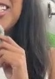
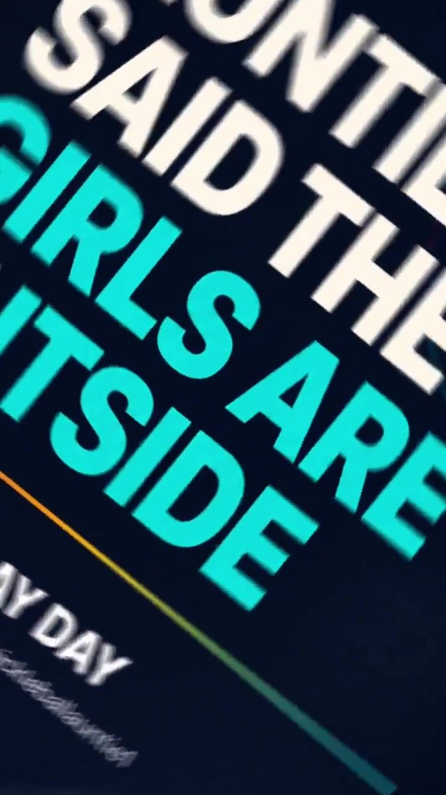

Honcho × Centerline Field / activation proof

05 / HOST / LIVE COMMAND
Honcho League Night · Celsius

06 / ACTIVATE / FIELD
Put the brand in a real room, then make the room worth remembering.

Selected promotional content later supported by paid amplification.

07 / WATCH / LBTV PROGRAMMING
Pick a door.




08 / TRUST / BETWEEN CUES
Spelman College alumna. Strategic communications, public health, behavior change and financial-education depth behind the camera work.

Healthcare professionals reached through AHRQ TeamSTEPPS facilitation and training.
Financial-education community supported through curriculum and video modules.
Complex material translated into useful language, live experiences and camera-ready stories.
09 / CASTING IMAGINATION / SEASON ZERO
A host. A creator. A point of view you can cast across formats.

Host / moderator / audience command
Creator / product narrative / on-camera
Activation / event storytelling / interviews
Explainer / format talent / editorial voice
10 / BOOK / END CARD
Atlanta-based; available for remote work, reasonable Southeast self-drive opportunities and select travel based on compensation and logistics.